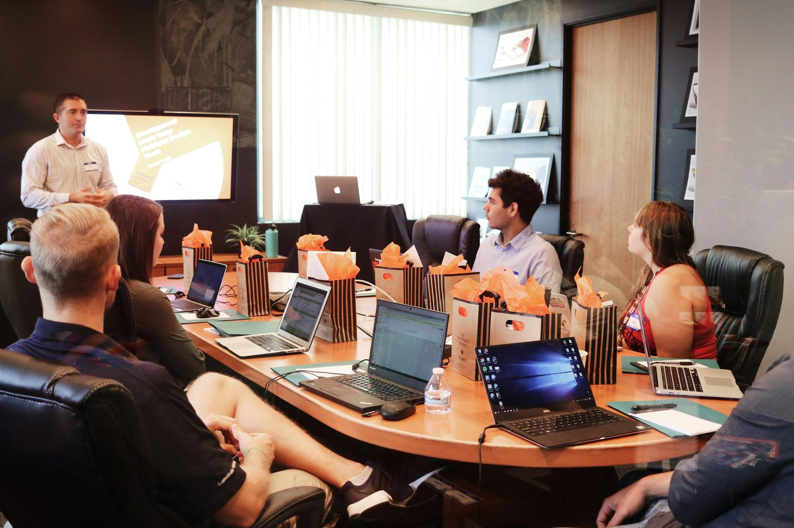

More enquiries is only step one. A CRM turns them into revenue.
Digital Movement UK sets up, connects and runs a CRM that captures every enquiry, follows up automatically and shows you which marketing actually creates customers — so the leads you worked for stop leaking away.
A CRM is judged by one thing: more of your enquiries becoming paying customers, with proof of where they came from.
Most businesses lose more deals after the enquiry than before it
Marketing gets the credit for growth, but the quiet killer sits one step later. A buyer fills in a form, calls, or messages — and then waits. The email lands in a shared inbox nobody owns. The callback is promised and forgotten. The quote goes out and no one follows up. Two days pass, the buyer hires whoever answered first, and the enquiry you paid for is gone. A CRM exists to close that gap: it captures every enquiry, assigns an owner, and makes the next step impossible to forget.
For a UK small or growing business, this is usually the highest-return fix available, because the leads already exist. You are not buying more traffic; you are keeping the buyers you already attracted. A clear pipeline turns "we think we followed up" into a list you can see, sort and act on. Reporting turns "marketing feels busy" into "this channel, this page and this campaign created these customers." That is the difference between spending on marketing and investing in it.
Digital Movement UK builds CRM around how you actually sell. We start with the journey a real enquiry takes through your business, find where it stalls, and build the smallest system that closes the leak. Then we make follow-up automatic, so good intentions are not the thing standing between you and revenue.
Nothing slips
Every enquiry from your site, phone, WhatsApp and ads lands in one place with an owner and a due date.
Follow-up runs itself
Automated reminders, emails and tasks keep every lead warm without anyone remembering to.
You see what pays
Each deal carries its source, so you know which marketing creates customers, not just clicks.
A CRM shaped around how you actually sell
We begin with a map of the journey a real enquiry takes through your business. How do enquiries arrive? Who is meant to respond, and how fast? Where do deals stall — at the quote, the callback, the second touch? That map becomes the build plan, so every pipeline stage and automation earns its place by removing a real point of friction.
From there we set up the system: pipelines that match your stages, lead capture from your website forms, phone, WhatsApp and ad lead forms, and the automations that chase, remind and route without manual effort. We connect the tools you already use — inbox, calendar, invoicing, your website — so the CRM becomes the single source of truth instead of another place to update. Then we train the people who live in it, because a CRM only works when the team trusts it.
Once it is running, the work shifts to improvement. We watch where deals still slow down, tighten the follow-up that converts, and report on the numbers that matter: response time, pipeline value, win rate and revenue by source. The system gets sharper every month, and the conversation stays about customers won.

What a CRM build with us covers
Every engagement is scoped to the work most likely to win you more customers first. The list below is the full toolkit; the first phase usually focuses on capture, pipeline and follow-up, because that is where recovered revenue appears fastest.
| Workstream | What it does | Why it matters |
|---|---|---|
| Pipeline design | Builds sales stages that match how you actually win work, with clear owners and next actions. | A visible pipeline turns guesswork into a list the team can act on every day. |
| Lead capture | Connects website forms, phone, WhatsApp and ad lead forms straight into the CRM. | Enquiries start follow-up the moment they arrive, with their source attached. |
| Follow-up automation | Sets up reminders, sequences, tasks and routing so no lead goes cold. | Most deals are won by the business that follows up first and keeps going. |
| Integrations | Links inbox, calendar, invoicing and your website into one connected system. | One connected source of truth keeps the whole team working from the same facts. |
| Reporting | Tracks response time, pipeline value, win rate and revenue by source. | You invest where customers actually come from, guided by the numbers. |
| Training & support | Trains the team, documents the system, and improves it on a rolling agreement. | A CRM only returns value when the people using it trust and keep it current. |
The right CRM is the one that fits how you sell
We work across every major platform, so the recommendation follows your team and your sales motion, on fit alone. Here is the honest shortlist for UK businesses.
Growing teams that want marketing + sales together
Tidy, modern and quick to adopt. Strong when you want forms, email, pipeline and reporting in one place and room to grow. Our most common fit for ambitious small and mid-size companies.
Lean sales teams that want a simple pipeline
Light, fast and focused on moving deals forward. Ideal when the priority is disciplined follow-up without a heavy setup.
Larger or complex operations
The deepest customisation and reporting for multi-team sales, complex products or strict process needs. Worth it when the complexity is real.
Local-service & agency-style follow-up
Messaging, booking, reviews and automated nurture in one place. Strong for clinics, trades and service firms that win work through fast, multi-channel follow-up.
Built for businesses that already get enquiries
This work suits owner-led companies, clinics, trades, consultancies, ecommerce brands and B2B teams that already attract enquiries and want more of them to become customers. It fits teams drowning in shared inboxes, spreadsheets and sticky notes, and teams that have a CRM but never set it up properly so no one uses it.
It is the natural partner to search and paid work. When SEO and paid ads bring the enquiries and the CRM converts them, you finally see the full picture — cost in, revenue out, by channel. That is when marketing stops being a leap of faith and becomes a decision you can make with numbers.
The strongest fits share one trait: they can turn a good conversation into revenue. A CRM makes sure those conversations happen on time, every time. It works best alongside a clear offer and confident pricing, and it makes certain the buyers who were ready to talk always hear back while they are still interested.
Free CRM review
We map how enquiries reach you and show where deals are leaking today.
First setup
We build the pipeline, capture and follow-up that recover revenue fastest.
Ongoing improvement
We sharpen automation and reporting as you grow, with no lock-in.
Real client work, in plain numbers
These five blocks are completed by Digital Movement with genuine client stories and UK-market specifics. We never auto-generate proof — if a number is here, it happened.
What the client thought the problem was
How we adapted the build to them
The measured result
What a comparable build costs
UK-specific: consent, data and what we advise against
Common questions about CRM
Straight answers for owners and teams weighing up fit, platform, timing and how CRM works with the rest of your marketing.
What does a CRM actually do for a small business?
A CRM keeps every enquiry, contact and deal in one place, then reminds the team to follow up so leads stop falling through the cracks. For a small business it usually pays for itself by recovering the enquiries that used to get lost in inboxes, notebooks and missed callbacks, and by showing which marketing actually creates revenue.
Which CRM is best: HubSpot, Salesforce, Pipedrive or GoHighLevel?
The best CRM depends on team size and how you sell. HubSpot suits growing companies that want marketing and sales in one tidy system. Pipedrive suits lean sales teams that want a simple pipeline. Salesforce suits larger or complex operations. GoHighLevel suits agencies and local-service firms that need messaging, booking and follow-up automation together. We recommend purely on fit.
How long does a CRM setup take?
A focused first setup usually takes two to four weeks: pipelines, lead capture, core automations and the integrations that matter most. Larger migrations from spreadsheets or an old system take longer. We start with the smallest version that improves follow-up, then build on it.
Can you connect the CRM to our website and ads?
Yes. We connect website forms, phone and WhatsApp enquiries, and ad lead forms so every enquiry lands in the CRM automatically with its source attached. That means follow-up starts immediately and you can see which channel, page or campaign created each deal.
Will the CRM work with our SEO and paid ads?
That is the point. SEO and paid ads create enquiries; the CRM turns them into revenue and proves which channel pays back. When the three work together you can decide with evidence and invest in whatever produces the most qualified customers.
Do you train our team and keep supporting us?
Yes. We train the people who use it, write short guides, and stay on a rolling agreement to improve pipelines, automations and reporting as you grow. No lock-in, so the work has to keep earning its place.
See where your enquiries are leaking — and what to fix first
Send how enquiries reach you today and what happens next. We will reply with the quickest ways to capture more of them and turn more into customers.
Raoul (Alex) Müller
Founder, Digital Movement UK
Email: alex@digitalmovement.uk
Phone: +49 176 82360647
WhatsApp: +49 176 23296439